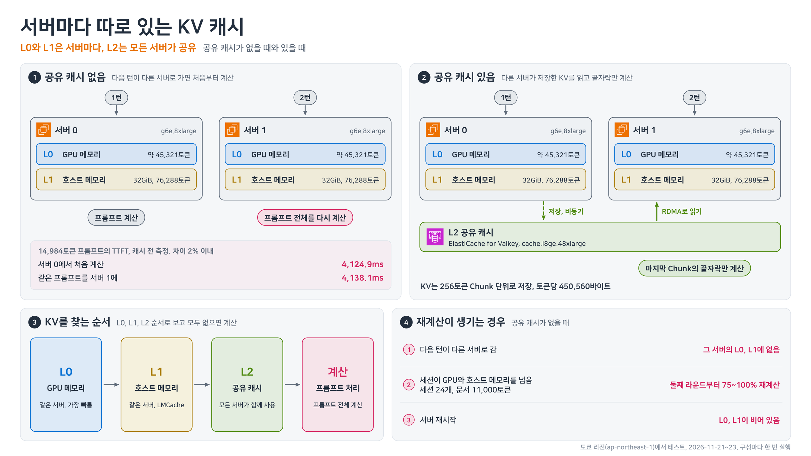
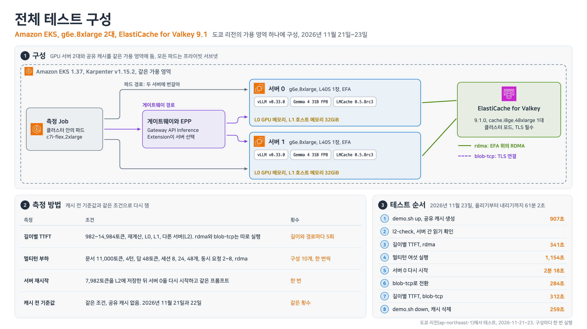
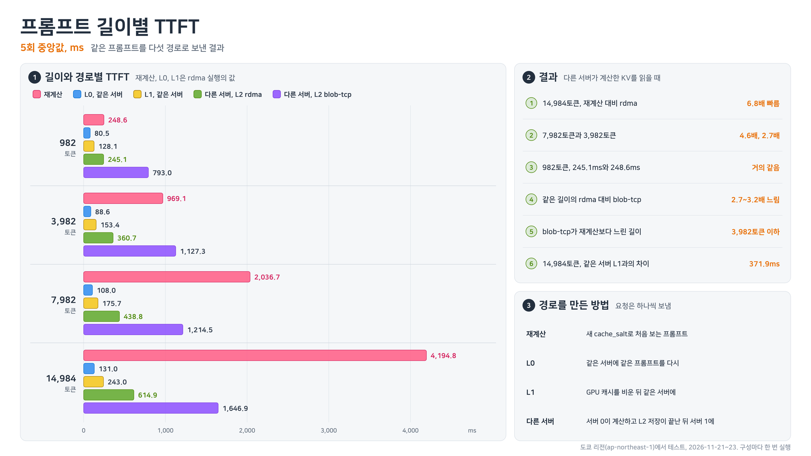
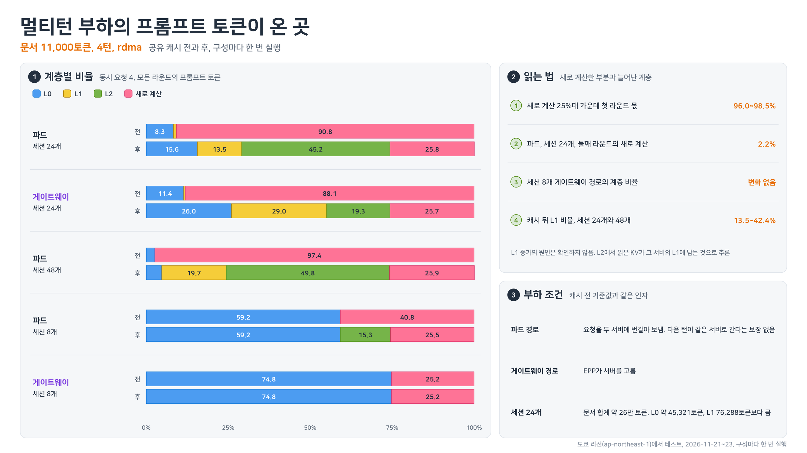
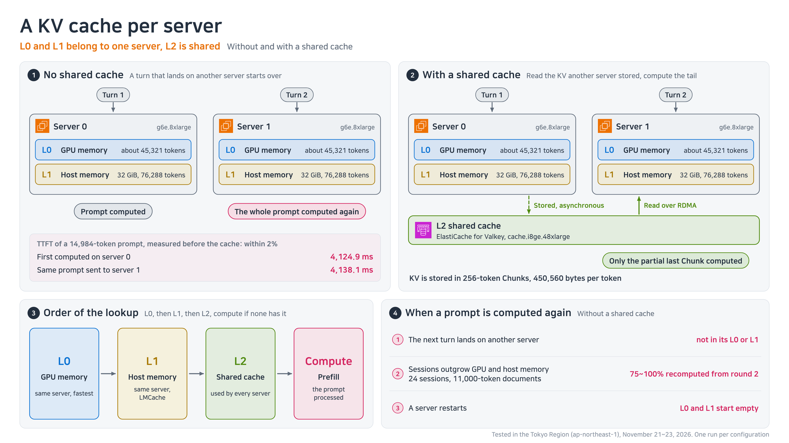
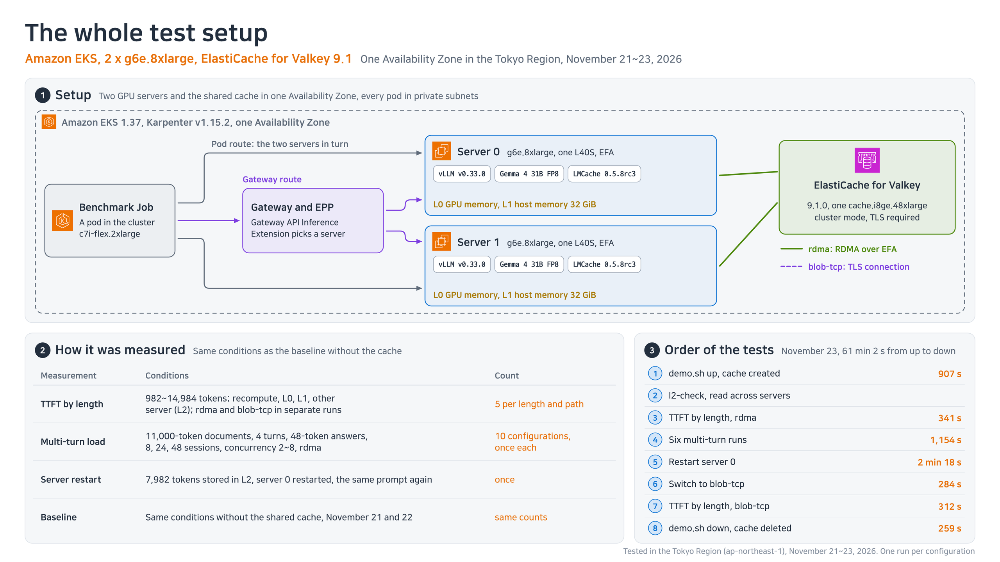
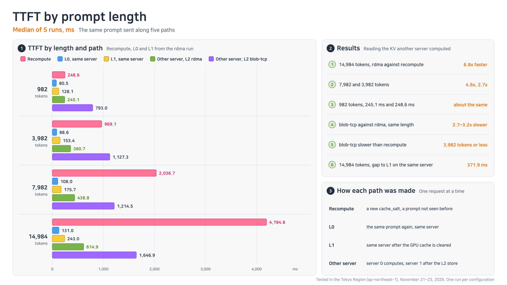
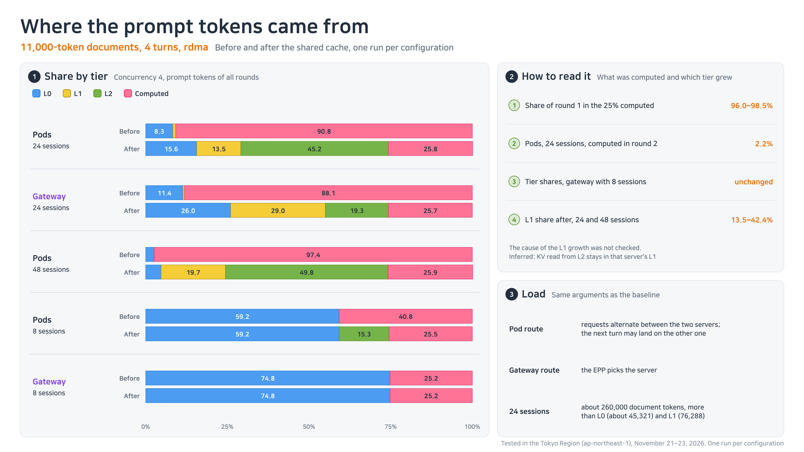

자체 호스팅한 LLM 서버 여러 대가 KV를 함께 사용하는 Amazon ElastiCache의 distributed KV caching을 도쿄 리전에서 직접 테스트해 보았습니다. 이 기능은 서울 리전에서 아직 제공되지 않습니다. 다른 서버가 계산한 14,984토큰 프롬프트를 공유 캐시에서 RDMA로 읽으면 TTFT가 4,194.8ms에서 614.9ms로 줄었습니다. 세션이 GPU와 호스트 메모리를 넘는 멀티턴 부하에서는 초당 요청이 0.533에서 1.042로 늘었습니다. 하지만 982토큰 프롬프트에서는 TTFT가 거의 같았고 세션이 GPU 메모리에 들어가는 부하에서는 계층 비율이 달라지지 않았습니다. TPOT p90은 50ms 아래로 내려가지 않았습니다.I tested Amazon ElastiCache distributed KV caching, which lets several self-hosted LLM servers share their KV, in the Tokyo Region. The feature is not yet offered in the Seoul Region. Reading a 14,984-token prompt that another server had computed from the shared cache over RDMA brought TTFT from 4,194.8 ms to 614.9 ms, and in a multi-turn load whose sessions did not fit in GPU and host memory the requests per second rose from 0.533 to 1.042. However, a 982-token prompt had about the same TTFT, and a load whose sessions fit in GPU memory kept the same shares by tier. TPOT p90 did not fall below 50 ms.
rdma 614.9ms로 6.8배 빨랐습니다. 982토큰에서는 248.6ms와 245.1ms로 거의 같았습니다.KV from another server: at 14,984 tokens recompute took 4,194.8 ms and the shared cache over rdma 614.9 ms, 6.8x faster. At 982 tokens the two were about the same, 248.6 ms and 245.1 ms.blob-tcp로 읽으면 rdma보다 2.7배에서 3.2배 느렸고 3,982토큰 이하에서는 재계산보다도 느렸습니다.Transport: reading the same cache with blob-tcp was 2.7 to 3.2 times slower than rdma, and at 3,982 tokens or less slower than recompute.LLM 서버는 답을 만들기 전에 프롬프트 전체를 읽어 KV라는 중간 계산 결과를 만들고 서버를 여러 대 두면 이 결과는 서버마다 따로 남습니다. 2026년 11월 18일 정식 출시된 Amazon ElastiCache의 distributed KV caching은 이 결과를 여러 서버가 함께 사용하는 공유 캐시입니다.
이 기능은 2026년 11월 23일 기준으로 서울 리전에서 제공되지 않습니다. 그래서 도쿄 리전(ap-northeast-1)에 GPU 서버 2대와 공유 캐시를 만들어 테스트했고 이 글의 수치는 모두 도쿄 리전에서 측정한 값입니다.
공유 캐시가 없으면 KV는 그 KV를 만든 서버의 GPU 메모리(L0)와 호스트 메모리(L1)에만 있습니다. 다음 턴이 다른 서버로 가거나 세션이 많아 메모리에서 밀려나거나 서버가 다시 시작하면 프롬프트를 처음부터 다시 계산합니다.

캐시를 붙이기 전에 잰 기준값도 그랬습니다. 서버 0이 처음 계산한 14,984토큰 프롬프트의 TTFT(첫 토큰까지의 시간)는 4,124.9ms였고 같은 프롬프트를 서버 1에 보내면 4,138.1ms였습니다. 세션 24개가 11,000토큰 문서로 대화하는 부하에서는 둘째 라운드부터도 프롬프트 토큰의 75%에서 100%를 다시 계산했습니다.
발표 블로그는 이 상황을 KV가 있는 GPU에서 오래 기다릴지 다른 GPU에서 다시 계산할지 고르는 문제로 설명합니다. 공유 캐시는 여기에 다른 서버가 계산한 KV를 읽는 방법을 더합니다.
01
다른 서버가 계산한 14,984토큰 프롬프트를 공유 캐시에서 RDMA로 읽으면 TTFT가 4,194.8ms에서 614.9ms가 됐습니다. 같은 방법으로 982토큰 프롬프트를 읽으면 248.6ms와 245.1ms로 거의 같았습니다.
테스트 전의 가설은 두 가지였습니다. 프롬프트가 길수록 TTFT가 더 줄어든다는 것과 세션이 GPU와 호스트 메모리를 넘는 부하에서 처리량이 늘어난다는 것입니다. 두 가설은 맞았습니다. 다만 짧은 프롬프트에서는 TTFT가 거의 같았고 TCP 전송은 짧은 프롬프트에서 재계산보다도 느렸습니다. 세션이 GPU 메모리에 들어가는 부하에서는 계층 비율이 달라지지 않았습니다. 출력 토큰 하나당 시간(TPOT)은 캐시를 붙여도 발표 블로그의 기준인 p90 50ms 아래로 내려가지 않았습니다.
02
사용 설명서는 GPU 메모리를 L0, 서버의 호스트 메모리와 로컬 NVMe를 L1, 분산 KV 캐시를 L2로 부릅니다. 엔진은 요청마다 L0, L1, L2 순서로 KV를 찾고 적중한 부분은 다시 계산하지 않습니다. 새로 계산한 KV는 공유 캐시에 저장해 다른 서버가 재사용하게 합니다.
서버와 공유 캐시 사이에서 KV를 옮기는 것은 오픈 소스 LMCache입니다. 이 테스트에서는 vLLM과 같은 컨테이너에서 실행되는 LMCache가 호스트 메모리 32GiB를 L1으로 두고 Valkey 어댑터로 L2를 읽고 썼습니다. KV는 256토큰 Chunk 단위로 저장되고 이 모델에서는 토큰당 450,560바이트, Chunk 하나에 110MiB였습니다.
L2 어댑터의 전송 방식은 세 가지입니다. rdma는 EFA 위의 RDMA로 데이터를 옮기고 TLS 연결에는 명령과 짧은 응답만 보냅니다. blob-tcp는 같은 large object 명령의 데이터를 TLS 연결로 보내고 tcp는 일반 SET과 GET을 사용합니다. 문서는 rdma를 운영용으로, 나머지 둘을 시험용으로 안내하고 RDMA 클라이언트는 캐시와 같은 가용 영역에 두게 합니다.
은행 상담 창구에 비유하면 이해하기 쉽습니다. 고객은 상담을 시작할 때 사정을 처음부터 설명하고 직원은 그 설명을 메모로 남깁니다. 프롬프트가 설명이고 KV가 메모입니다. L0는 직원 책상 위의 메모이고 L1은 그 직원의 서랍입니다. 다음 상담에서 다른 창구로 가면 그 직원에게는 메모가 없어 고객이 사정을 다시 설명해야 합니다. L2는 모든 창구가 함께 사용하는 서류실이어서 어느 창구에서든 메모를 꺼내 올 수 있습니다. 다만 꺼내 오는 데도 시간이 걸리므로 짧은 사연은 다시 듣는 편이 빠릅니다. RDMA는 창구와 서류실을 잇는 전용 승강기이고 TCP는 직원이 걸어서 다녀오는 길입니다. 메모가 있어도 직원이 답을 말하는 속도는 그대로입니다.
실제 시스템이 비유와 다른 점은 메모를 따로 작성하지 않는다는 것입니다. 계산 결과를 256토큰 단위로 그대로 보관하므로 마지막에 덜 찬 묶음은 다시 계산합니다.
03
GPU 서버 2대와 공유 캐시를 도쿄 리전의 가용 영역 하나에 두었습니다. 요청은 클러스터 안의 측정 Job이 GPU 서버와 같은 가용 영역에서 보냈습니다.

| 항목 | 값 |
|---|---|
| 클러스터 | Amazon EKS 1.37, Karpenter v1.15.2 |
| GPU 서버 | g6e.8xlarge 2대(NVIDIA L40S 한 장씩), EFA, 서버마다 vLLM 파드 하나 |
| 추론 서버와 KV 커넥터 | vLLM v0.33.0, LMCache 0.5.8rc3(다중 프로세스 방식), valkey-glide-sync 2.6.0 |
| 모델 | Gemma 4 31B, FP8-dynamic 체크포인트, 최대 입력 16,384토큰 |
| 공유 캐시 | ElastiCache for Valkey 9.1.0, cache.i8ge.48xlarge 1대, cluster mode, TLS 필수 |
| 캐시 계층 | L0 GPU 메모리(vLLM의 prefix cache, 약 45,321토큰), L1 호스트 메모리(LMCache 32GiB, 76,288토큰), L2 공유 캐시 |
| 요청 경로 | 파드 경로는 두 서버에 번갈아 보내고 게이트웨이 경로는 Gateway API Inference Extension의 EPP가 서버를 고름 |
표 1. 테스트 환경. 2026년 11월 21일부터 23일까지 도쿄 리전
요구 사항에 따라 distributed KV caching은 cache.i8ge.48xlarge 노드와 Valkey 9.1 이상에서만 동작합니다. 캐시는 cluster mode, 복제본 0, 전송 구간 암호화 필수로 만들어야 합니다. 백업과 복원, 복제는 지원하지 않고 서비스 업데이트와 엔진 업그레이드는 저장한 객체를 지우므로 캐시는 언제든 비어 있을 수 있는 것으로 다룹니다.
도쿄 리전의 cache.i8ge.48xlarge 단가는 시간당 37.806 USD입니다. GPU 서빙과 대기 상태를 더한 데모 환경 전체는 시간당 51.923 USD여서 캐시는 측정할 때만 만들고 끝나면 지웠습니다. GPU 서빙이 자동으로 내려가는 시각의 15분 뒤에는 EventBridge Scheduler의 일회성 일정이 캐시를 지우도록 해 두었습니다.
측정한 날은 올리기 시작부터 내리기 끝까지 61분 2초였습니다. 이 시간 전체를 시간당 51.923 USD로 계산한 52.82 USD가 위쪽 한계입니다. 청구서에서 읽은 값이 아니며 ALB, WAF, CloudFront, 데이터 전송, 빌드와 측정 노드는 빠져 있습니다.
04
환경은 테스트용으로 만든 데모 스크립트로 올리고 내렸습니다. scripts/demo.sh up은 GPU 서빙을 L1만 사용하는 방식으로 올린 뒤 Terraform으로 캐시를 만들고 KV_MODE를 rdma로 바꿔 파드를 하나씩 다시 시작합니다. 측정한 날의 명령 순서입니다.
scripts/demo.sh up --hours 3 --mode rdma --yes # GPU 서빙과 공유 캐시를 올림. 시간당 51.923 USD
scripts/l2-check.sh # 한 서버가 저장한 KV를 다른 서버가 읽는지 확인
export L2_OUT=results/2026-11-23-l2
scripts/l2-measure.sh ttft # 길이별 TTFT
scripts/l2-measure.sh multiturn # 멀티턴 여섯 실행
scripts/l2-measure.sh restart-store # 서버 0에 7,982토큰을 저장
scripts/l2-measure.sh restart-load # 서버 0을 다시 시작한 뒤 같은 프롬프트
scripts/demo.sh mode blob-tcp --yes # 전송 방식 전환
scripts/l2-measure.sh ttft # 길이별 TTFT, blob-tcp
scripts/demo.sh down --yes # 내리고 남은 것이 없는지 확인up의 출력입니다. 캐시 생성은 4분 57초였고 전날 처음 만들 때는 5분 7초였습니다. 캐시 이름과 엔드포인트는 가렸고 대기 줄은 줄였습니다.
$ scripts/demo.sh up --hours 3 --mode rdma --yes
GPU 서빙을 올리고 공유 캐시를 만듭니다.
시작하는 것: g6e.8xlarge 2대(GPU 노드), 게이트웨이와 EPP용 노드(c7i-flex.xlarge 2대), cache.i8ge.48xlarge 1대(공유 캐시)
시간당 비용: 51.923 USD(대기 상태의 비용을 포함합니다. 공유 캐시 37.806 USD를 더한 값입니다. ALB, WAF, CloudFront와 데이터 전송 요금은 빠져 있습니다)
(생략)
aws_elasticache_replication_group.kv: Creation complete after 4m57s [id=<cache-name>]
Apply complete! Resources: 1 added, 0 changed, 0 destroyed.
공유 캐시가 available입니다. KV_MODE를 rdma로 바꾸고 파드를 하나씩 다시 시작합니다.
(생략)
{"pod": "vllm-gemma-1", "prompt_tokens": 913, "ttft_ms": 250.7, "total_ms": 1056.6}
{"pod": "vllm-gemma-0", "prompt_tokens": 913, "ttft_ms": 252.2, "total_ms": 1058.8}
상태: 서빙
캐시 사용 방식(KV_MODE): rdma
vLLM 복제본(준비/목표): 2/2, GPU NodeClaim: 2개
공유 캐시(<cache-name>): available캐시는 Terraform 리소스 하나이고 문서의 요구 사항이 그대로 인자가 됩니다.
resource "aws_elasticache_replication_group" "kv" {
engine = "valkey"
engine_version = "9.1"
node_type = "cache.i8ge.48xlarge"
# cluster mode는 필수이고 복제본이 0이어도 자동 장애 조치를 켭니다.
cluster_mode = "enabled"
num_node_groups = 1
replicas_per_node_group = 0
automatic_failover_enabled = true
transit_encryption_enabled = true
transit_encryption_mode = "required"
at_rest_encryption_enabled = true
# 서비스 업데이트와 엔진 업그레이드는 캐시를 비웁니다.
auto_minor_version_upgrade = false
# (서브넷 그룹, 보안 그룹, 사용자 그룹은 생략)
}LMCache는 IAM 인증을 지원하지 않아 비밀번호가 있는 Valkey 사용자 하나를 두었습니다. 권한은 LMCache의 키 접두사와 세 전송 방식의 명령으로 좁혔고 +@largeobj가 large object 명령의 권한입니다. ElastiCache는 권한 문자열을 정규화해서 돌려주므로(명령은 소문자, 키 뒤에 resetchannels -@all, 끝에 alldbs) Terraform에는 돌려받은 모양을 그대로 적었습니다. 그렇지 않으면 plan마다 변경이 한 건씩 나옵니다.
on ~gemma-4-31b-fp8dyn.tp1.kvfp8@* ~gemma-4-31b-fp8dyn.tp1.kvfp8-tcp@* ~__lmcache_blob_tcp_probe__
resetchannels -@all
+@largeobj +get +set +exists +del +expire +info +ping
+client|setinfo +client|setname +cluster|slots +cluster|info
alldbsLMCache의 L2 어댑터 설정입니다. 비밀번호는 실행기가 AWS Secrets Manager에서 읽어 LMCache를 같은 프로세스에서 시작할 때 넣으므로 명령줄과 환경 변수에 남지 않습니다. rdma에서는 작업자마다 L1 전체를 EFA 장치에 등록하므로 작업자를 2개로 두었습니다.
{
"type": "valkey",
"transport": "rdma",
"cluster_mode": true,
"startup_nodes": "<configuration endpoint>:6379",
"tls_enable": true,
"username": "lmcache",
"key_prefix": "gemma-4-31b-fp8dyn.tp1.kvfp8",
"num_workers": 2,
"request_timeout": 5.0,
"connection_timeout": 120.0,
"max_capacity_gb": 0,
"rdma_provider": "efa-direct"
}파드가 다시 시작되면 LMCache가 준비 줄을 남깁니다. 컨테이너 시작부터 이 줄까지 23초 안팎이었고 L1 32GiB를 작업자 2개에 등록하는 시간이 여기에 들어 있습니다.
LMCache INFO: ValkeyRdmaWorkerPool: provider=efa-direct interfaces=(provider's choice) l1_arena=[...] (34359738368 bytes) on 2 workers
LMCache INFO: ValkeyL2Adapter ready: transport=rdma workers=2 cluster_mode=True nodes=[<endpoint>] tls=True buffer_get=True key_prefix='gemma-4-31b-fp8dyn.tp1.kvfp8'l2-check.sh는 서버 0에 보낸 프롬프트의 KV를 서버 1이 공유 캐시에서 읽는지 LMCache 지표로 판정합니다. 서버 1은 처음 받는 8,938토큰 프롬프트 가운데 8,704토큰을 L2에서 읽었고 L1 적중은 0이었습니다.
$ scripts/l2-check.sh
{"role": "store", "prompt_tokens": 8938, "l2_store_requests": 5, "l2_stored_chunks": 68, "waited_s": 2.0, "ok": true}
{"role": "load", "prompt_tokens": 8938, "l2_hit_tokens": 8704, "l1_hit_tokens": 0, "cached_tokens": null, "ok": true}
파드 0이 쓴 KV를 파드 1이 L2에서 읽었습니다.측정이 끝나면 down이 서빙을 내리고 캐시와 삭제 일정을 지운 뒤 남은 것이 없는지 확인합니다. 259초가 걸렸고 그 뒤의 상태는 대기, 시간당 0.555 USD입니다.
$ scripts/demo.sh down --yes
GPU 서빙을 내립니다. 지금 상태: 서빙
지우는 것: 공유 캐시 <cache-name>(상태 available)와 삭제 일정. 캐시의 내용은 남지 않습니다
(생략)
공유 캐시와 삭제 일정, 엔드포인트 기록을 지웠습니다.
GPU 인스턴스는 pending과 running이 0대입니다. NodeClaim 객체는 몇 분 더 남을 수 있어 그동안 상태가 '내리는 중'으로 보입니다.
$ scripts/demo.sh status
상태: 대기
캐시 사용 방식(KV_MODE): l1
vLLM 복제본(준비/목표): 0/0, GPU NodeClaim: 0개
GPU 인스턴스(EC2): 없음
공유 캐시(<cache-name>): 없음
캐시 삭제 일정: 없음
시간당 비용: 0.555 USD(대기 상태. ALB, WAF, CloudFront와 데이터 전송 요금은 빠져 있습니다)05
같은 프롬프트를 네 경로로 보냈습니다. 재계산은 새 cache_salt로 보낸 처음 보는 프롬프트이고 L0는 같은 서버에 다시, L1은 GPU 캐시를 비운 뒤 같은 서버에 보낸 경우입니다. 다른 서버는 서버 0이 계산한 프롬프트를 L2 저장이 끝난 뒤 서버 1에 보낸 경우입니다. rdma와 blob-tcp는 파드를 다시 시작한 뒤 따로 잰 두 실행이고 값은 5회의 중앙값입니다.
| 프롬프트 토큰 | 재계산 | L0 | L1 | 다른 서버, L2 rdma | 다른 서버, L2 blob-tcp |
|---|---|---|---|---|---|
| 982 | 248.6 | 80.5 | 128.1 | 245.1 | 793.0 |
| 3,982 | 969.1 | 88.6 | 153.4 | 360.7 | 1,127.3 |
| 7,982 | 2,036.7 | 108.0 | 175.7 | 438.8 | 1,214.5 |
| 14,984 | 4,194.8 | 131.0 | 243.0 | 614.9 | 1,646.9 |
표 2. 프롬프트 길이별 TTFT(ms, 5회 중앙값). 재계산, L0, L1은 rdma 실행의 값

rdma로 읽으면 재계산보다 3,982토큰에서 2.7배, 7,982토큰에서 4.6배, 14,984토큰에서 6.8배 빨랐습니다. 14,984토큰 가운데 14,848토큰은 L2에서 왔고 마지막 136토큰은 256토큰 Chunk를 채우지 못해 새로 계산했습니다. 982토큰에서는 768토큰을 L2에서 읽었지만 TTFT는 재계산과 거의 같았습니다.
blob-tcp로 읽으면 같은 길이의 rdma보다 2.7배에서 3.2배 느렸습니다. 982토큰과 3,982토큰에서는 재계산보다도 느렸고(793.0ms와 250.2ms, 1,127.3ms와 965.1ms) 7,982토큰부터 빨랐습니다. 이 비교에는 blob-tcp 실행에서 잰 재계산 값을 사용했습니다.
같은 서버의 L1과 비교하면 공유 캐시는 14,984토큰에서 371.9ms 느렸습니다(243.0ms와 614.9ms). 공유 캐시가 대신하는 것은 같은 서버에 있는 KV가 아니라 다른 서버로 간 요청의 재계산입니다.
06
멀티턴 부하는 11,000토큰 문서에 질문을 네 번 이어 붙이는 세션 여러 개를 동시에 보내는 방식입니다. 답은 최대 48토큰이고 캐시 전 기준값과 같은 인자로 rdma에서 다시 쟀습니다. 파드 경로는 다음 턴이 같은 서버로 간다는 보장이 없고 게이트웨이 경로는 EPP가 서버를 고릅니다.
| 경로 | 세션 | 동시 요청 | 초당 요청 (전, 후) | TTFT p50 ms (전, 후) | 둘째 라운드부터 TTFT p90 ms (전, 후) | TPOT p90 ms (전, 후) |
|---|---|---|---|---|---|---|
| 파드 | 24 | 2 | 0.411, 0.715 | 3,087.5, 533.2 | 3,212.1, 579.9 | 54.75, 54.72 |
| 파드 | 24 | 4 | 0.533, 1.042 | 3,226.8, 898.7 | 5,281.7, 969.3 | 212.58, 109.97 |
| 파드 | 24 | 8 | 0.601, 1.458 | 4,780.4, 945.5 | 9,301.4, 1,138.7 | 518.59, 196.89 |
| 게이트웨이 | 24 | 4 | 0.479, 1.083 | 3,267.2, 584.0 | 5,896.6, 954.7 | 355.51, 109.86 |
| 파드 | 48 | 4 | 0.517, 1.046 | 3,220.8, 913.8 | 4,794.2, 974.5 | 246.34, 110.85 |
| 게이트웨이 | 8 | 4 | 1.158, 1.033 | 253.5, 261.9 | 268.1, 358.4 | 109.53, 106.97 |
표 3. 멀티턴 부하(문서 11,000토큰, 4턴, 답 48토큰, rdma). 10개 구성 가운데 6개, 구성마다 한 번 실행
세션 24개와 48개에서는 초당 요청이 1.7배에서 2.7배가 됐고 TTFT p50은 3.1초에서 5.7초이던 것이 0.47초에서 0.95초로 내려갔습니다. 둘째 라운드부터의 TTFT p90은 10개 구성 모두 1.2초 아래였습니다.

그림의 세션 24개와 48개 구성은 캐시 전에 프롬프트 토큰의 88.1%에서 97.4%를 새로 계산했고 캐시를 붙인 뒤에는 25%대였습니다. 남은 25%대는 거의 전부 처음 보는 문서를 읽는 첫 라운드입니다. 새로 계산한 토큰의 96.0%에서 98.5%가 첫 라운드였고 파드 경로 세션 24개, 동시 요청 4의 둘째 라운드에서 새로 계산한 토큰은 265,126개 가운데 5,958개(2.2%)였습니다.
세션 8개를 게이트웨이 경로로 보낸 부하는 계층 비율이 달라지지 않았습니다. 캐시 전에도 둘째 라운드부터 L0에서 읽던 부하여서 공유 캐시가 할 일이 없었습니다. 초당 요청과 전체 TTFT p90은 나빠졌지만(1.158에서 1.033, 4,300.2ms에서 5,418.5ms) 이 p90은 첫 라운드 요청 하나로 정해지고 한 번씩 잰 값이라 편차와 구분하지 못합니다. 같은 세션 8개라도 파드 경로에서는 다음 턴이 다른 서버로 갈 때 다시 계산하던 부분을 L2에서 읽었습니다.
캐시를 붙인 뒤 세션 24개와 48개의 L1 비율이 13.5%에서 42.4%가 됐습니다. 캐시 전에는 0%에서 0.9%였습니다. L2에서 읽은 KV는 그 서버의 L1에 남으므로 같은 서버로 다시 온 요청이 L1에서 읽은 것으로 보지만 원인은 확인하지 않았습니다.
캐시를 만들기 전에 KVTrace로 효과를 예측했습니다. KVTrace는 vLLM이 내보내는 KV 이벤트를 기록해 공유 캐시가 있었다면 얼마나 적중했을지 계산하는 도구입니다. 세션 24개, 동시 요청 4의 부하에서는 L2를 조회했을 토큰의 63.6%가 적중한다고 예측했습니다(L2가 277.7GiB 이상일 때).
같은 부하의 측정에서 두 경로를 합쳐 L2에서 읽은 토큰을 L2와 새로 계산한 토큰의 합으로 나누면 55.6%이고 L1까지 넣으면 67.5%입니다. 측정에서는 L1 적중이 예측보다 훨씬 많았으므로 두 값을 같은 양의 예측과 측정으로 비교할 수는 없었습니다.
07
서버 0에 7,982토큰 프롬프트를 보내 L2 저장이 끝나기를 기다렸습니다. 그 뒤 서버 0의 파드를 지우고 새 파드가 준비되자 같은 프롬프트를 다시 보냈습니다.
| 단계 | 값 |
|---|---|
| 서버 0에서 처음 계산 | 7,982토큰, TTFT 2,025.1ms |
| 파드 삭제 시작부터 새 파드 준비까지 | 2분 18초 |
| 다시 뜬 서버 0에 같은 프롬프트 | L2에서 7,936토큰, L0와 L1은 0, TTFT 434.8ms |
표 4. 서버 재시작 뒤 같은 프롬프트(한 번 실행)
다시 시작한 서버의 L0와 L1은 비어 있었고 프롬프트는 마지막 46토큰을 빼고 공유 캐시에서 왔습니다. 공유 캐시가 없으면 이 요청은 L0와 L1이 비어 있으므로 프롬프트 전체를 다시 계산합니다.
08
짧은 프롬프트에서 TTFT가 거의 같은 것은 읽어 오는 시간이 다시 계산하는 시간과 비슷해지기 때문으로 보입니다. 982토큰에서는 768토큰만 L2에서 오고 214토큰은 새로 계산합니다. 발표 블로그는 캐시에서 읽는 편이 다시 계산하는 것보다 빨라지는 프롬프트 길이를 cutover point라고 부르고 모델마다 다르다고 설명합니다. 이 장비와 모델의 rdma에서는 982토큰에서 거의 같았고 3,982토큰에서는 2.7배 빨랐습니다.
읽을 때는 저장한 것의 일부만 가져옵니다. 연결을 확인할 때 서버 1이 8,704토큰을 읽으면서 가져온 객체는 저장된 68개 가운데 38개(740MiB)였습니다. 설치된 LMCache의 소스는 sliding window 층의 그룹에 접두사의 마지막 몇 개 Chunk만 필요하다고 적고 있습니다. 저장한 객체는 Chunk마다 2개(Chunk 34개에 68개)였습니다. 그래서 38개를 한 그룹의 34개와 sliding window 그룹의 마지막 4개로 추론했습니다. 그룹별 크기는 재지 않았습니다.
멀티턴에서 처리량이 늘어난 것은 둘째 라운드부터 다시 계산하던 프롬프트를 L2와 L1에서 읽었기 때문입니다. 캐시 전에는 세션 24개의 문서 합계 약 26만 토큰이 L0(약 45,321토큰)와 L1(76,288토큰)에 다 들어가지 않았고 밀려난 세션을 다시 계산한 것으로 봅니다.
TPOT p90은 여러 구성에서 줄었지만 50ms 아래로 내려간 구성은 없었습니다. 캐시를 붙인 뒤 54.72ms에서 210.84ms였고 동시 요청 2에서는 캐시 전 54.75ms와 거의 같았습니다. 공유 캐시가 덜어 주는 것은 프롬프트를 계산하는 단계(prefill)이고 토큰을 하나씩 만드는 단계(decode)는 GPU가 그대로 맡습니다. 발표 블로그의 SLO(TTFT p90 5초 미만, TPOT p90 50ms 미만)를 지킨 구성은 캐시 전과 후 모두 없었고 TPOT p90은 모든 구성에서 기준을 넘었습니다.
09
사용 설명서는 오래 이어지는 세션과 멀티턴 세션, 공유하거나 반복되는 문맥, 여러 GPU 서버로 퍼지는 변동이 큰 트래픽에 이 기능이 맞는다고 설명합니다. 예로 코딩 에이전트, 멀티턴 대화, 공유 시스템 프롬프트, 긴 문맥과 RAG를 듭니다. 그 경우마다 이번 테스트에서 본 결과를 표 5에 정리했습니다.
| 경우 | 이 테스트에서 본 것 |
|---|---|
| 여러 세션이 긴 문서에 질문을 이어 가는 서비스 | 세션 24개와 48개에서 초당 요청 1.7배에서 2.7배, 둘째 라운드부터 TTFT p90 1.2초 아래 |
| 요청이 여러 서버로 흩어지는 라우팅 | 파드 경로에서 다른 서버로 간 턴을 L2에서 읽음 |
| 서버 재시작과 서버 추가 | 다시 뜬 서버가 7,936토큰을 L2에서 읽어 TTFT 434.8ms |
| 긴 프롬프트 | 14,984토큰에서 6.8배, 길수록 차이가 큼 |
표 5. 문서가 드는 활용 경우와 이 테스트의 결과. 서버 추가는 재시작과 같이 L0와 L1이 비어 있는 경우로 보고 따로 재지 않음
공유 캐시가 TTFT를 줄이지 못한 경우도 분명했습니다. 982토큰 정도의 짧은 프롬프트에서는 재계산과 거의 같았고 EFA 없이 TCP로 읽는 짧은 프롬프트는 재계산보다 느렸습니다. 세션이 GPU 메모리에 들어가 이미 L0에서 읽는 부하에서는 계층 비율이 달라지지 않았습니다. 문서도 짧거나 반복되지 않는 프롬프트(분류, 번역, 콘텐츠 검토)와 출력 생성이 대부분인 부하에는 효과가 작다고 설명합니다.
10
모든 구성을 한 번씩만 실행해 실행 사이의 편차는 재지 않았습니다. 수치는 g6e.8xlarge 2대(L40S 한 장씩)와 Gemma 4 31B의 값입니다. 발표 블로그는 GPU 8장짜리 P6 서버 2대에서 6대, 250B에서 1.6T 파라미터 모델로 비용 최대 40% 절감과 TTFT 최대 80% 단축을 보고했으므로 두 수치는 조건이 다릅니다.
도쿄 리전에서만 테스트했습니다. LMCache 0.5.8rc3은 정식 릴리스가 아닌 시험판이고 문서도 rdma와 blob-tcp에는 0.5.8rc1 이상이 필요하다고 안내합니다. vLLM과 LMCache의 설정은 L1 크기(32GiB)를 포함해 캐시 전 기준값과 같게 두었습니다.
다시 재 볼 것은 blob-tcp와 tcp의 멀티턴 부하, 캐시 전체가 사라졌을 때 진행 중인 요청의 동작, 한 서버가 내려가 있는 동안 남은 서버의 TTFT, 실행 사이의 편차입니다. blob-tcp가 982토큰에서도 793.0ms 걸린 이유, 캐시를 붙인 뒤 L1 적중이 늘어난 원인, 게이트웨이 경로에서 EPP가 고른 서버는 확인하지 않았습니다.
11
공유 캐시를 붙일지는 프롬프트 길이, 세션 수와 GPU 메모리, 라우팅으로 정합니다. 확인할 항목과 이 테스트의 값을 표 6에 정리했습니다.
| 확인할 것 | 이 테스트의 값 | 판단 |
|---|---|---|
| 프롬프트 길이 | rdma에서 982토큰은 거의 같음, 3,982토큰부터 2.7배 이상 | 길이 분포에서 cutover point보다 긴 요청의 비율을 봄 |
| 세션 수와 GPU 메모리 | L0 약 45,321토큰, 세션 8개 게이트웨이 경로는 계층 비율 그대로 | 세션이 L0에 다 들어가면 효과가 작음 |
| 라우팅 | 파드 경로에서 다른 서버로 간 턴을 L2에서 읽음 | 다음 턴이 다른 서버로 가는 구성일수록 효과가 큼 |
| 전송 방식 | blob-tcp는 rdma보다 2.7배에서 3.2배 느림 | 같은 가용 영역에서 rdma 사용 |
| TPOT 목표 | 캐시를 붙인 뒤 54.72ms에서 210.84ms | 공유 캐시와 별개로 GPU 구성으로 맞춤 |
| 비용 | 도쿄 리전 노드 시간당 37.806 USD | 측정할 때만 만들고 삭제 일정을 둠 |
표 6. 공유 캐시를 붙이기 전에 확인할 항목. 값은 이 테스트의 장비와 모델 기준
KVTrace는 캐시 없이 실행되므로 지금 부하에서 L2에 적중할 토큰이 얼마나 되는지 먼저 확인해 보는 것을 권고합니다. 수치는 GPU, 모델의 토큰당 KV 크기(이 모델은 450,560바이트), 프롬프트 길이, 세션 수, 라우팅에 따라 달라집니다.
Before an LLM server answers, it reads the whole prompt and builds an intermediate result called the KV, and when there are several servers each one keeps its own. Amazon ElastiCache distributed KV caching, generally available since November 18, 2026, is a shared cache that lets several servers use that result together.
As of November 23, 2026, the feature is not offered in the Seoul Region. I therefore built two GPU servers and the shared cache in the Tokyo Region (ap-northeast-1), and every figure in this post was measured there.
Without a shared cache, the KV exists only in the GPU memory (L0) and host memory (L1) of the server that built it. When the next turn lands on another server, when there are so many sessions that the KV is pushed out of memory, or when a server restarts, the prompt is computed again from the start.

The baseline measured before the cache showed the same. The TTFT (time to first token) of a 14,984-token prompt first computed on server 0 was 4,124.9 ms, and the same prompt sent to server 1 took 4,138.1 ms. In a load of 24 sessions talking about 11,000-token documents, 75% to 100% of the prompt tokens were computed again even from the second round.
The announcement blog post describes this as a choice between waiting longer on the GPU that holds the KV and computing it again on another GPU. A shared cache adds a third way: reading the KV another server computed.
01
Reading a 14,984-token prompt that another server had computed from the shared cache over RDMA brought TTFT from 4,194.8 ms to 614.9 ms. Read the same way, a 982-token prompt was about the same: 248.6 ms and 245.1 ms.
Before the test I had two hypotheses: the longer the prompt, the more TTFT drops, and throughput rises in a load whose sessions do not fit in GPU and host memory. Both held. Short prompts, however, had about the same TTFT, and TCP transport was even slower than recompute for short prompts. A load whose sessions fit in GPU memory kept the same shares by tier. Time per output token (TPOT) did not fall below the announcement post's target of 50 ms at p90, even with the cache.
02
The User Guide calls GPU memory L0, the server's host memory and local NVMe L1, and a distributed KV cache L2. For each request the engine looks up the KV in L0, L1 and L2 order and does not compute the part it finds. Newly computed KV is stored in the shared cache so that other servers can reuse it.
The open-source LMCache moves the KV between a server and the shared cache. In this test LMCache ran in the same container as vLLM, kept 32 GiB of host memory as L1 and read and wrote L2 through its Valkey adapter. The KV is stored in 256-token Chunks; for this model it was 450,560 bytes per token, 110 MiB per Chunk.
The L2 adapter has three transports. rdma moves the data with RDMA over EFA and sends only the command and a short reply on the TLS connection. blob-tcp sends the data of the same large object commands on the TLS connection, and tcp uses plain SET and GET. The documentation recommends rdma for production and the other two for testing, and RDMA clients must be in the Availability Zone of the cache.
A bank's service counters make this easier to picture. A customer explains the situation from the start, and the clerk keeps notes on it. The prompt is the explanation and the KV is the notes. L0 is the notes on the clerk's desk and L1 is that clerk's drawer. If the customer goes to another counter next time, that clerk has no notes, and the customer has to explain everything again. L2 is a file room that every counter shares, so any counter can fetch the notes. Fetching them takes time too, so a short story is quicker to hear again. RDMA is a dedicated lift between the counters and the file room, and TCP is the clerk walking there and back. Having the notes does not make the clerk answer any faster.
Where the real system differs: nobody writes separate notes. The computed result itself is kept in 256-token units, so the last, partly filled unit is computed again.
03
The two GPU servers and the shared cache were in one Availability Zone of the Tokyo Region. Requests came from a benchmark Job inside the cluster, in the same Availability Zone as the GPU servers.

| Item | Value |
|---|---|
| Cluster | Amazon EKS 1.37, Karpenter v1.15.2 |
| GPU servers | Two g6e.8xlarge (one NVIDIA L40S each), EFA, one vLLM pod per server |
| Inference server and KV connector | vLLM v0.33.0, LMCache 0.5.8rc3 (multi-process mode), valkey-glide-sync 2.6.0 |
| Model | Gemma 4 31B, FP8-dynamic checkpoint, maximum input 16,384 tokens |
| Shared cache | ElastiCache for Valkey 9.1.0, one cache.i8ge.48xlarge, cluster mode, TLS required |
| Cache tiers | L0 GPU memory (vLLM prefix cache, about 45,321 tokens), L1 host memory (LMCache 32 GiB, 76,288 tokens), L2 shared cache |
| Request routes | The pod route alternates between the two servers; on the gateway route the EPP of the Gateway API Inference Extension picks the server |
Table 1. Test environment. Tokyo Region, November 21 to 23, 2026
Under the requirements, distributed KV caching works only on cache.i8ge.48xlarge nodes with Valkey 9.1 or later. The cache must be created with cluster mode, zero replicas and encryption in transit required. Backup, restore and replication are not supported, and service updates and engine upgrades remove the stored objects, so the cache is treated as something that can be empty at any time.
The cache.i8ge.48xlarge node costs 37.806 USD per hour in the Tokyo Region. The whole demo environment, GPU serving and the standby state included, came to 51.923 USD per hour, so the cache was created only for measurements and deleted afterwards. A one-time EventBridge Scheduler schedule deletes the cache 15 minutes after the time at which GPU serving shuts down automatically.
On the day of the measurements, 61 min 2 s passed from the start of bringing everything up to the end of taking it down. That whole time at 51.923 USD per hour, 52.82 USD, is the upper bound. It is not read from a bill and leaves out ALB, WAF, CloudFront, data transfer and the build and benchmark nodes.
04
The environment was brought up and taken down with a demo script written for this test. scripts/demo.sh up starts GPU serving with L1 only, creates the cache with Terraform, sets KV_MODE to rdma and restarts the pods one by one. These are the commands of the measurement day, in order. The scripts print their messages in Korean.
scripts/demo.sh up --hours 3 --mode rdma --yes # bring up GPU serving and the shared cache, 51.923 USD per hour
scripts/l2-check.sh # check that one server reads the KV another stored
export L2_OUT=results/2026-11-23-l2
scripts/l2-measure.sh ttft # TTFT by length
scripts/l2-measure.sh multiturn # six multi-turn runs
scripts/l2-measure.sh restart-store # store 7,982 tokens on server 0
scripts/l2-measure.sh restart-load # the same prompt after server 0 restarts
scripts/demo.sh mode blob-tcp --yes # switch the transport
scripts/l2-measure.sh ttft # TTFT by length, blob-tcp
scripts/demo.sh down --yes # take everything down and check nothing is leftThe output of up. Creating the cache took 4 min 57 s; the first creation the day before took 5 min 7 s. The cache name and endpoint are masked and the waiting lines are cut.
$ scripts/demo.sh up --hours 3 --mode rdma --yes
GPU 서빙을 올리고 공유 캐시를 만듭니다.
시작하는 것: g6e.8xlarge 2대(GPU 노드), 게이트웨이와 EPP용 노드(c7i-flex.xlarge 2대), cache.i8ge.48xlarge 1대(공유 캐시)
시간당 비용: 51.923 USD(대기 상태의 비용을 포함합니다. 공유 캐시 37.806 USD를 더한 값입니다. ALB, WAF, CloudFront와 데이터 전송 요금은 빠져 있습니다)
(생략)
aws_elasticache_replication_group.kv: Creation complete after 4m57s [id=<cache-name>]
Apply complete! Resources: 1 added, 0 changed, 0 destroyed.
공유 캐시가 available입니다. KV_MODE를 rdma로 바꾸고 파드를 하나씩 다시 시작합니다.
(생략)
{"pod": "vllm-gemma-1", "prompt_tokens": 913, "ttft_ms": 250.7, "total_ms": 1056.6}
{"pod": "vllm-gemma-0", "prompt_tokens": 913, "ttft_ms": 252.2, "total_ms": 1058.8}
상태: 서빙
캐시 사용 방식(KV_MODE): rdma
vLLM 복제본(준비/목표): 2/2, GPU NodeClaim: 2개
공유 캐시(<cache-name>): availableThe cache is one Terraform resource, and the documented requirements become its arguments.
resource "aws_elasticache_replication_group" "kv" {
engine = "valkey"
engine_version = "9.1"
node_type = "cache.i8ge.48xlarge"
# Cluster mode is required, and automatic failover is on even with zero replicas.
cluster_mode = "enabled"
num_node_groups = 1
replicas_per_node_group = 0
automatic_failover_enabled = true
transit_encryption_enabled = true
transit_encryption_mode = "required"
at_rest_encryption_enabled = true
# Service updates and engine upgrades empty the cache.
auto_minor_version_upgrade = false
# (subnet group, security group and user group left out)
}LMCache does not support IAM authentication, so there is one Valkey user with a password. Its permissions are narrowed to the LMCache key prefix and the commands of the three transports; +@largeobj grants the large object commands. ElastiCache returns the access string in a normalized form (commands in lower case, resetchannels -@all after the keys, alldbs at the end), so Terraform holds the returned form as it is. Otherwise every plan shows one change.
on ~gemma-4-31b-fp8dyn.tp1.kvfp8@* ~gemma-4-31b-fp8dyn.tp1.kvfp8-tcp@* ~__lmcache_blob_tcp_probe__
resetchannels -@all
+@largeobj +get +set +exists +del +expire +info +ping
+client|setinfo +client|setname +cluster|slots +cluster|info
alldbsThe L2 adapter settings of LMCache. The launcher reads the password from AWS Secrets Manager and passes it when it starts LMCache in the same process, so it never appears on a command line or in an environment variable. With rdma each worker registers the whole L1 with the EFA device, so there are two workers.
{
"type": "valkey",
"transport": "rdma",
"cluster_mode": true,
"startup_nodes": "<configuration endpoint>:6379",
"tls_enable": true,
"username": "lmcache",
"key_prefix": "gemma-4-31b-fp8dyn.tp1.kvfp8",
"num_workers": 2,
"request_timeout": 5.0,
"connection_timeout": 120.0,
"max_capacity_gb": 0,
"rdma_provider": "efa-direct"
}When a pod restarts, LMCache logs a ready line. It came about 23 s after the container started, and that includes registering the 32 GiB L1 for two workers.
LMCache INFO: ValkeyRdmaWorkerPool: provider=efa-direct interfaces=(provider's choice) l1_arena=[...] (34359738368 bytes) on 2 workers
LMCache INFO: ValkeyL2Adapter ready: transport=rdma workers=2 cluster_mode=True nodes=[<endpoint>] tls=True buffer_get=True key_prefix='gemma-4-31b-fp8dyn.tp1.kvfp8'l2-check.sh uses LMCache metrics to decide whether server 1 reads the KV of a prompt sent to server 0 from the shared cache. Server 1 read 8,704 of the 8,938 tokens of a prompt it had never seen from L2, with no L1 hits.
$ scripts/l2-check.sh
{"role": "store", "prompt_tokens": 8938, "l2_store_requests": 5, "l2_stored_chunks": 68, "waited_s": 2.0, "ok": true}
{"role": "load", "prompt_tokens": 8938, "l2_hit_tokens": 8704, "l1_hit_tokens": 0, "cached_tokens": null, "ok": true}
파드 0이 쓴 KV를 파드 1이 L2에서 읽었습니다.After the measurements down stops serving, deletes the cache and its deletion schedule, and checks that nothing is left. It took 259 s, and the state afterwards is standby at 0.555 USD per hour.
$ scripts/demo.sh down --yes
GPU 서빙을 내립니다. 지금 상태: 서빙
지우는 것: 공유 캐시 <cache-name>(상태 available)와 삭제 일정. 캐시의 내용은 남지 않습니다
(생략)
공유 캐시와 삭제 일정, 엔드포인트 기록을 지웠습니다.
GPU 인스턴스는 pending과 running이 0대입니다. NodeClaim 객체는 몇 분 더 남을 수 있어 그동안 상태가 '내리는 중'으로 보입니다.
$ scripts/demo.sh status
상태: 대기
캐시 사용 방식(KV_MODE): l1
vLLM 복제본(준비/목표): 0/0, GPU NodeClaim: 0개
GPU 인스턴스(EC2): 없음
공유 캐시(<cache-name>): 없음
캐시 삭제 일정: 없음
시간당 비용: 0.555 USD(대기 상태. ALB, WAF, CloudFront와 데이터 전송 요금은 빠져 있습니다)05
The same prompt was sent along four paths. Recompute is a prompt not seen before, sent with a new cache_salt; L0 sends it again to the same server, and L1 sends it to the same server after its GPU cache is cleared. Other server sends a prompt that server 0 computed to server 1 once the L2 store has finished. rdma and blob-tcp are two separate runs after restarting the pods, and each value is the median of 5.
| Prompt tokens | Recompute | L0 | L1 | Other server, L2 rdma | Other server, L2 blob-tcp |
|---|---|---|---|---|---|
| 982 | 248.6 | 80.5 | 128.1 | 245.1 | 793.0 |
| 3,982 | 969.1 | 88.6 | 153.4 | 360.7 | 1,127.3 |
| 7,982 | 2,036.7 | 108.0 | 175.7 | 438.8 | 1,214.5 |
| 14,984 | 4,194.8 | 131.0 | 243.0 | 614.9 | 1,646.9 |
Table 2. TTFT by prompt length (ms, median of 5). Recompute, L0 and L1 are from the rdma run

Reading over rdma was 2.7 times faster than recompute at 3,982 tokens, 4.6 times at 7,982 tokens and 6.8 times at 14,984 tokens. Of the 14,984 tokens, 14,848 came from L2 and the last 136 did not fill a 256-token Chunk, so they were computed. At 982 tokens 768 tokens were read from L2, yet TTFT was about the same as recompute.
Reading over blob-tcp was 2.7 to 3.2 times slower than rdma at the same length. At 982 and 3,982 tokens it was even slower than recompute (793.0 ms against 250.2 ms, 1,127.3 ms against 965.1 ms), and from 7,982 tokens it was faster. This comparison uses the recompute values of the blob-tcp run.
Against L1 on the same server, the shared cache was 371.9 ms slower at 14,984 tokens (243.0 ms and 614.9 ms). What the shared cache replaces is not the KV already on the same server but the recompute of a request that went to another server.
06
The multi-turn load runs several sessions at once, each asking four questions in a row about an 11,000-token document. Answers are at most 48 tokens, and the runs repeat the arguments of the baseline without the cache, now with rdma. On the pod route the next turn may land on the other server; on the gateway route the EPP picks the server.
| Route | Sessions | Concurrency | Requests per second (before, after) | TTFT p50 ms (before, after) | TTFT p90 from round 2, ms (before, after) | TPOT p90 ms (before, after) |
|---|---|---|---|---|---|---|
| Pods | 24 | 2 | 0.411, 0.715 | 3,087.5, 533.2 | 3,212.1, 579.9 | 54.75, 54.72 |
| Pods | 24 | 4 | 0.533, 1.042 | 3,226.8, 898.7 | 5,281.7, 969.3 | 212.58, 109.97 |
| Pods | 24 | 8 | 0.601, 1.458 | 4,780.4, 945.5 | 9,301.4, 1,138.7 | 518.59, 196.89 |
| Gateway | 24 | 4 | 0.479, 1.083 | 3,267.2, 584.0 | 5,896.6, 954.7 | 355.51, 109.86 |
| Pods | 48 | 4 | 0.517, 1.046 | 3,220.8, 913.8 | 4,794.2, 974.5 | 246.34, 110.85 |
| Gateway | 8 | 4 | 1.158, 1.033 | 253.5, 261.9 | 268.1, 358.4 | 109.53, 106.97 |
Table 3. Multi-turn load (11,000-token documents, 4 turns, 48-token answers, rdma). 6 of 10 configurations, one run each
With 24 and 48 sessions, requests per second rose 1.7 to 2.7 times, and TTFT p50 went from 3.1 to 5.7 s down to 0.47 to 0.95 s. TTFT p90 from the second round was below 1.2 s in all 10 configurations.

In the figure's 24- and 48-session configurations, 88.1% to 97.4% of the prompt tokens were computed before the cache, and about 25% after it. That remaining 25% is almost entirely the first round, which reads documents not seen before. 96.0% to 98.5% of the computed tokens were in the first round, and in the second round of the pod route with 24 sessions and concurrency 4 only 5,958 of 265,126 tokens (2.2%) were computed.
The load of 8 sessions on the gateway route kept the same shares by tier. It already read from L0 from the second round before the cache, so the shared cache had nothing to do. Requests per second and overall TTFT p90 got worse (1.158 to 1.033, 4,300.2 ms to 5,418.5 ms), but that p90 is set by a single first-round request and each value comes from one run, so it cannot be told apart from run-to-run variation. With the same 8 sessions on the pod route, the part that used to be computed again when the next turn went to the other server was read from L2.
With the cache, the L1 share of the 24- and 48-session configurations became 13.5% to 42.4%, against 0% to 0.9% before. KV read from L2 stays in that server's L1, so I take it that requests coming back to the same server read from L1, but the cause was not checked.
Before creating the cache I predicted the effect with KVTrace, a tool that records the KV events vLLM publishes and computes how often a shared cache would have hit. For 24 sessions at concurrency 4 it predicted that 63.6% of the tokens looked up in L2 would hit (with an L2 of 277.7 GiB or more).
In the measurement of the same load, the tokens read from L2 divided by the sum of L2 and computed tokens, both routes together, came to 55.6%, and 67.5% with L1 included. L1 hits in the measurement were far above the prediction, so the two values could not be compared as the prediction and the measurement of the same quantity.
07
A 7,982-token prompt was sent to server 0 and the L2 store was allowed to finish. Then the pod of server 0 was deleted, and once the new pod was ready the same prompt was sent again.
| Step | Value |
|---|---|
| First computed on server 0 | 7,982 tokens, TTFT 2,025.1 ms |
| From the pod deletion to the new pod ready | 2 min 18 s |
| Same prompt to the restarted server 0 | 7,936 tokens from L2, nothing from L0 or L1, TTFT 434.8 ms |
Table 4. The same prompt after a server restart (one run)
L0 and L1 of the restarted server were empty, and all of the prompt except the last 46 tokens came from the shared cache. Without a shared cache L0 and L1 would be empty as well, so this request would compute the whole prompt again.
08
A short prompt has about the same TTFT most likely because fetching takes about as long as computing. At 982 tokens only 768 tokens come from L2 and 214 are computed. The announcement post calls the prompt length above which reading from the cache beats recomputing the cutover point and says it differs by model. With rdma on this hardware and model, 982 tokens were about even and 3,982 tokens were 2.7 times faster.
A read fetches only part of what was stored. When server 1 read 8,704 tokens during the connection check, it fetched 38 of the 68 stored objects (740 MiB). The installed LMCache source says that a sliding window layer group needs only the last few Chunks of the prefix. The stored objects were two per Chunk (68 objects for 34 Chunks). From this I infer that the 38 are 34 objects of one group and the last 4 of the sliding window group. The size per group was not measured.
Throughput rose in the multi-turn load because prompts that used to be computed again from the second round were read from L2 and L1. Before the cache, the roughly 260,000 document tokens of 24 sessions did not fit in L0 (about 45,321 tokens) and L1 (76,288 tokens), and I take it that sessions pushed out were computed again.
TPOT p90 dropped in several configurations, but none went below 50 ms. With the cache it was 54.72 ms to 210.84 ms, and at concurrency 2 it was about the same as the 54.75 ms before the cache. What the shared cache takes off the GPU is the step that processes the prompt (prefill); the step that produces tokens one by one (decode) stays on the GPU. No configuration met the announcement post's SLO (TTFT p90 under 5 s, TPOT p90 under 50 ms) before or after the cache, and TPOT p90 exceeded the target in every configuration.
09
The User Guide says the feature suits long-running and multi-turn sessions, shared or repeated context, and spiky traffic spread across many GPU servers. Its examples are coding agents, multi-turn chat, shared system prompts, and long-context and RAG workloads. Table 5 lists what this test saw for each case.
| Case | What this test saw |
|---|---|
| A service where many sessions keep asking about long documents | 1.7 to 2.7 times the requests per second with 24 and 48 sessions, TTFT p90 under 1.2 s from round 2 |
| Routing that spreads requests over several servers | On the pod route, turns that went to the other server were read from L2 |
| Server restarts and added servers | The restarted server read 7,936 tokens from L2, TTFT 434.8 ms |
| Long prompts | 6.8 times at 14,984 tokens, the gap grows with length |
Table 5. Cases the documentation names and what this test saw. An added server is taken to start with empty L0 and L1 like a restart and was not measured separately
The cases where the shared cache did not lower TTFT were just as clear. Short prompts of about 982 tokens were about the same as recompute, and short prompts read over TCP without EFA were slower than recompute. A load whose sessions fit in GPU memory and already read from L0 kept the same shares by tier. The documentation, too, says the benefit is small for short or never-repeated prompts (classification, translation, moderation) and for workloads where output generation takes most of the time.
10
Each configuration ran once, so run-to-run variation was not measured. The figures belong to two g6e.8xlarge instances (one L40S each) and Gemma 4 31B. The announcement post reported up to 40% lower cost and up to 80% lower TTFT with 2 to 6 P6 servers of 8 GPUs each and models of 250B to 1.6T parameters, so the two sets of figures come from different conditions.
The test ran only in the Tokyo Region. LMCache 0.5.8rc3 is a pre-release, not a stable release, and the documentation states that rdma and blob-tcp need 0.5.8rc1 or later. vLLM and LMCache settings, including the 32 GiB L1, were kept the same as in the baseline without the cache.
Worth measuring again: the multi-turn load over blob-tcp and tcp, what in-flight requests do when the whole cache disappears, the TTFT of the remaining server while one server is down, and run-to-run variation. I did not check why blob-tcp took 793.0 ms even at 982 tokens, why L1 hits grew after the cache was attached, or which server the EPP picked on the gateway route.
11
Whether to attach a shared cache depends on prompt length, the number of sessions against GPU memory, and routing. Table 6 lists the items to check with the values from this test.
| What to check | Value in this test | How to decide |
|---|---|---|
| Prompt length | About the same at 982 tokens with rdma, 2.7 times or more from 3,982 tokens | Look at the share of requests longer than the cutover point |
| Sessions and GPU memory | L0 about 45,321 tokens; tier shares unchanged with 8 sessions on the gateway route | Little gain when all sessions fit in L0 |
| Routing | On the pod route, turns that went to the other server were read from L2 | The more often the next turn lands on another server, the larger the gain |
| Transport | blob-tcp 2.7 to 3.2 times slower than rdma | Use rdma in the same Availability Zone |
| TPOT target | 54.72 ms to 210.84 ms with the cache | Meet it with the GPU setup, apart from the shared cache |
| Cost | 37.806 USD per node hour in the Tokyo Region | Create it only for measurements and keep a deletion schedule |
Table 6. Items to check before attaching a shared cache. Values are for the hardware and model of this test
KVTrace runs without the cache, so I recommend first checking how many tokens of the current load would hit L2. The figures change with the GPU, the model's KV size per token (450,560 bytes for this model), the prompt length, the number of sessions and the routing.
| No. | 출처Source | 종류Kind | 확인한 날Checked |
|---|---|---|---|
| 1 | Amazon ElastiCache now supports distributed KV caching for self-hosted LLM inference | What's NewWhat's New | 2026-11-23 |
| 2 | Announcing distributed KV caching for self-hosted LLMs with Amazon ElastiCache | AWS 블로그AWS blog | 2026-11-23 |
| 3 | Distributed KV caching | 공식 문서AWS docs | 2026-11-23 |
| 4 | How distributed KV caching works | 공식 문서AWS docs | 2026-11-23 |
| 5 | Requirements and limits for distributed KV caching | 공식 문서AWS docs | 2026-11-23 |
| 6 | Amazon ElastiCache Pricing | 요금 페이지Pricing page | 2026-11-23 |
| 7 | KVTrace (aws-samples/amazon-elasticache-samples) | GitHubGitHub | 2026-11-23 |